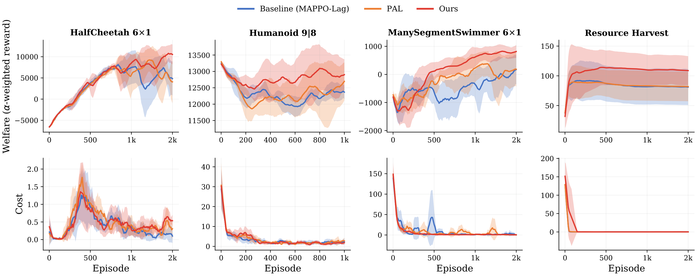
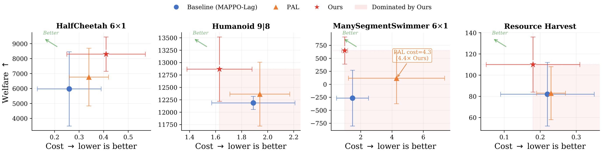
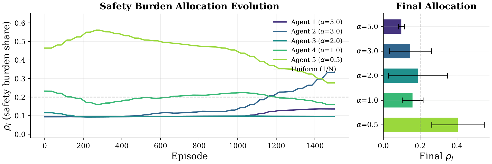
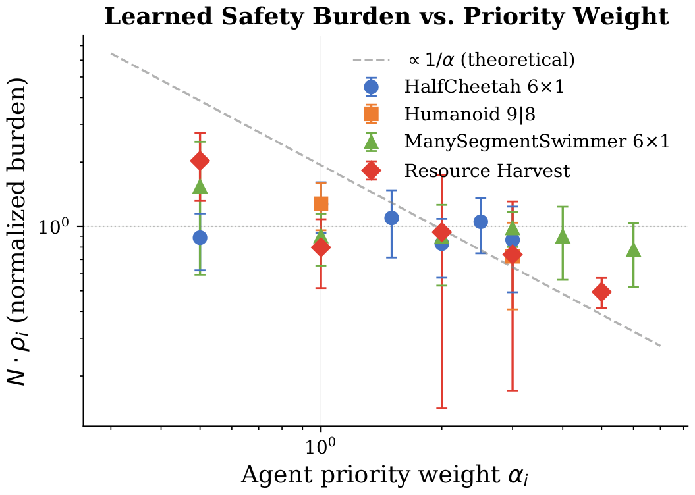
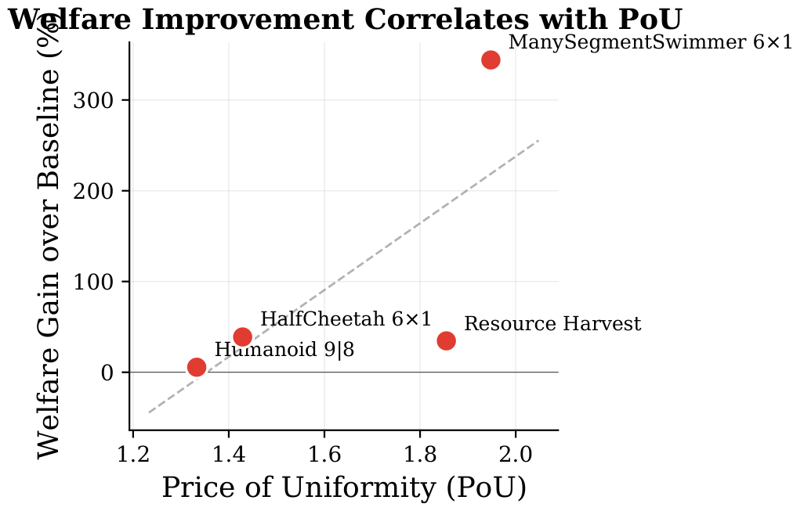

Safety burden allocation during training on HalfCheetah 6×1. Left: the learned responsibility vector $\rho$ — low-importance agents (small $\alpha$) progressively absorb more safety burden, freeing high-value agents for locomotion. Right: welfare (blue) and constraint cost (red) over training. Dashed lines mark the analytical $\rho_i^\star \propto 1/\alpha_i$ prediction from the quadratic game.
When multiple robots share a safety constraint, someone must bear the cost of staying safe. Existing constrained multi-agent RL methods distribute this burden equally — an allocation that is suboptimal when agents differ in importance to team welfare. We propose responsibility decomposition: factoring the Lagrangian dual variable into a shared constraint-tightness scalar $\lambda$ and a per-agent responsibility vector $\rho_\varphi(s)$ on the probability simplex. Because $\rho$ cancels from the aggregate Lagrangian at any fixed policy, it cannot relax the constraint; yet it alters each agent's stationarity conditions and thereby selects which equilibrium learning converges to. We derive the implicit equilibrium-response gradient for updating $\rho$ by differentiating welfare through the game equilibrium. On four benchmarks (Safe Multi-Agent MuJoCo HalfCheetah, Humanoid, and ManySegmentSwimmer; a resource-harvesting domain) with $N{=}2$ to $6$ agents, responsibility decomposition raises welfare by up to +38.9% with 2.2× lower variance and reduces constraint cost on Humanoid, ManySegmentSwimmer, and Resource Harvest. The welfare gain is consistent with the Price of Uniformity $\text{PoU} = \text{AM}(\alpha)/\text{HM}(\alpha)$, confirming that heterogeneous teams benefit most from non-uniform allocation.
Existing constrained MARL methods use a single Lagrangian multiplier $\lambda$ shared identically across all agents. This implicitly imposes a uniform safety burden: every agent sacrifices the same amount of reward to satisfy the joint constraint, regardless of how important that agent is to team welfare. When agents are heterogeneous, uniform allocation leaves welfare on the table.
We decompose the per-agent multiplier into two factors: a shared constraint-tightness scalar $\lambda$ and a per-agent responsibility weight $\rho_i(s)$ that lives on the probability simplex. Because the responsibility weights sum to one, the total constraint budget is unchanged — $\rho$ cannot relax the safety constraint. What it does change is the gradient each agent sees: high-importance agents receive a smaller safety penalty and focus on maximizing reward, while low-importance agents absorb more of the safety cost.
The responsibility vector $\rho_\varphi(s)$ is learned end-to-end by differentiating team welfare through the Nash equilibrium of the inner constrained game. This requires the implicit equilibrium-response gradient — how the equilibrium policies shift as $\rho$ changes — computed via implicit differentiation of the KKT conditions.
| Benchmark | N | PoU | Baseline Welfare | Ours Welfare | Gain | Cost (Ours / BL) |
|---|---|---|---|---|---|---|
| HalfCheetah 6×1 | 6 | 1.43 | 5973 ± 2482 | 8298 ± 1147 | +38.9% | 0.41 / 0.26 |
| Humanoid 9|8 | 2 | 1.33 | 12187 ± 132 | 12868 ± 649 | +5.6% | 1.63 / 1.89 |
| ManySegmentSwimmer 6×1 | 6 | 1.95 | −266 ± 537 | 650 ± 261 | massive | 0.98 / 1.48 |
| Resource Harvest | 5 | 1.86 | 82 ± 30 | 110 ± 26 | +34.7% | 0.18 / 0.22 |

Figure 2. Welfare during training across all four benchmarks. Responsibility decomposition (blue) consistently reaches higher welfare with lower variance. The gap is largest on HalfCheetah and ManySegmentSwimmer, where agent heterogeneity is highest (PoU > 1.4).

Figure 3. Welfare-cost tradeoff across benchmarks. Our method (colored markers) achieves Pareto-dominant points — higher welfare at the same or lower constraint cost — on Humanoid, ManySegmentSwimmer, and Resource Harvest.

Figure 4. Responsibility weights $\rho_i$ during training on Resource Harvest. Agents with higher importance $\alpha_i$ converge to lower responsibility — the inverse-importance pattern. The allocation stabilizes well before the end of training, confirming the three-timescale separation.
Two theoretical predictions underpin the method. First, the optimal responsibility weight for each agent should be inversely proportional to its importance weight $\alpha_i$. Second, the welfare gain from non-uniform allocation should scale with the Price of Uniformity $\text{PoU} = \text{AM}(\alpha)/\text{HM}(\alpha)$ — the ratio of the arithmetic to harmonic mean of the importance weights.

Figure 5. Learned $\rho_i$ vs. importance $\alpha_i$ (log-log). The slope is close to $-1$, confirming the inverse-importance prediction: more important agents bear less safety burden.

Figure 6. Welfare improvement vs. Price of Uniformity across benchmarks. Higher PoU (more heterogeneous teams) yields larger gains, consistent with theory. The correlation validates PoU as a diagnostic for when responsibility decomposition helps.
@article{anonymous2026responsibility,
title = {Learning Safety Burden Allocation by Equilibrium Response},
author = {Anonymous},
year = {2026},
note = {Preprint}
}